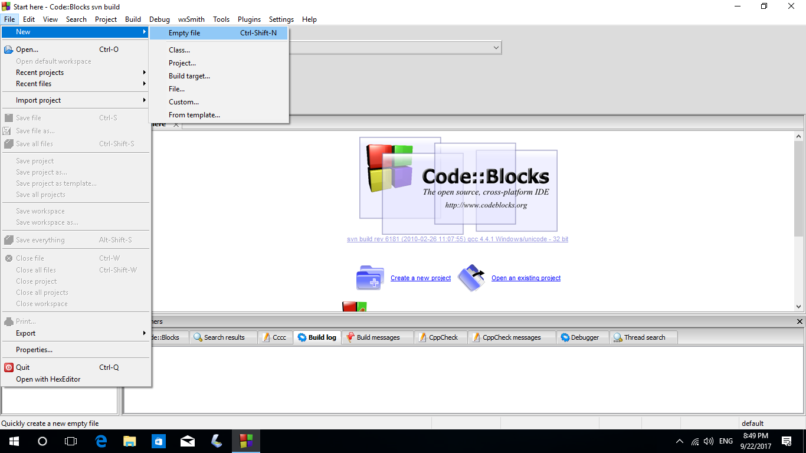
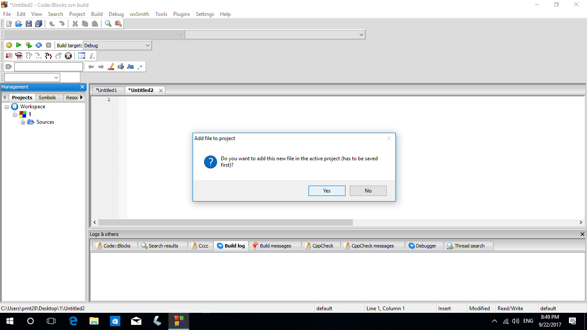
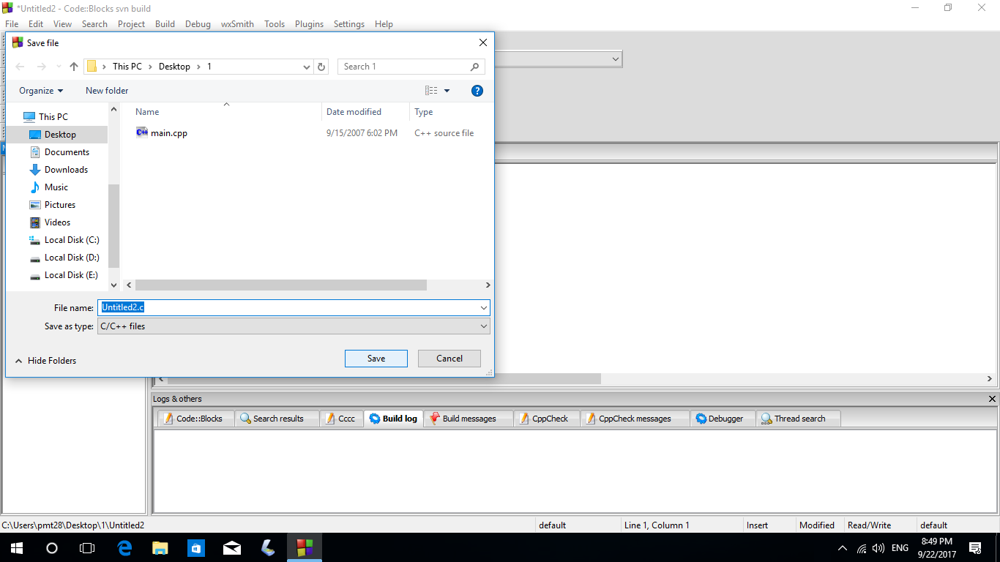

Ȋn C++ se lucrează cu fișiere text sau binare. Noi vom ȋnvăța să lucrăm cu fișiere text.
Definiție: Un fișier este o colecție omogenă de date, identificată prin nume.extensie
Operațiile permise asupra fișierelor prin intermediul unui program C++ sunt:
•Citire din fișier
•Scriere ȋn fișier
•Adăugare la sfȃrșitul unui fișier
Etapele de lucru cu fișiere:
1.

Un fișier deschis pentru citire trebuie creat
ȋnainte de rularea programului, ca să salvăm ȋn el
datele de intrare. Acest lucrul se face astfel:

Se salvează fișierul cu numele și extensia
din problemă și se dă „salvare”. Apoi
se scriu datele de intrare ȋn el.

Ȋn mod asemănător se crează un fișier gol
cu numele și extensia din program
pentru fișierul de ieșire.
Acesta va conține după rularea
programului rezultatele problemei.
2. Includerea bibliotecii de lucru cu fișiere:
#include< fstream >*
3. Deschiderea fișierului:
a)Pentru citire: cȃnd vrem să citim datele de intrare ale problemei din fișier (ne va scuti de reintroduerea datelor de intrare la fiecare rulare a programului)
ifstream nl(“nume.ext”);
sau
fstream nl(“nume.ext”, ios::in);
b)Pentru scriere: dacă vrem ca rezultatele problemei să fie salvate ȋntr-un fișier
ofstream nl(“nume.ext”);
sau
fstream nl*(“nume.ext”, ios::out);
c)Pentru adăugare: dacă vrem să scriem datele de ieșire la sfȃrșitul fișierului are conține date de intrare
fstream nl(“nume.ext”, ios::app);
4. Prelucrarea datelor din fișier
a)Citire din fișier (evident, din cel deschis pentru citire sau adăugare)
nl>>var1>>var2>>…>>varn;
Exemplu: f>>a>>b; (am citit din fișierul f variabilele a și b)
b)Scriere ȋn fișier (ȋn cel deschis pentru scriere sau adăugare)
Exemplu: g<<”a=”<
c)Parcurgerea unui fișier deschis pentru citire/adăugare
C.1. Dacă se știe numărul de valori pe care le avem de parcurs:
for(i=1;i<=nr valori;i++)
{ nl>>x;
//prelucrăm x}
C.2. Dacă nu se știe numărul de valori pe care le citim
{//prelucrăm x}
Sau
//prelucrăm x;}
5. Ȋnchiderea fișierului
nl.close(); - pentru fiecare fișier ȋn parte pe care l-ați deschis ȋn program.
*Dacă in program avem si instructiunile cin, cout, atunci se va include si biblioteca < iostream >, altfel nu va mai fi nevoie de ea
**numele logic al fisierului (in identificator care va reprezenta fisierul in program. De exemplu: f, g, q, f1, etc.)